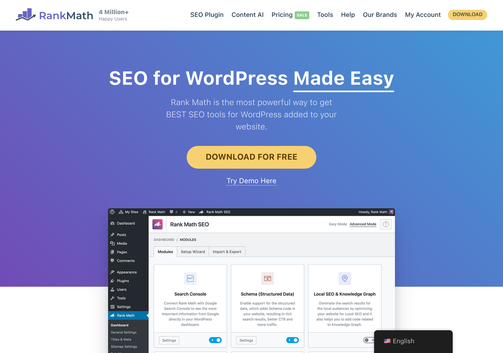
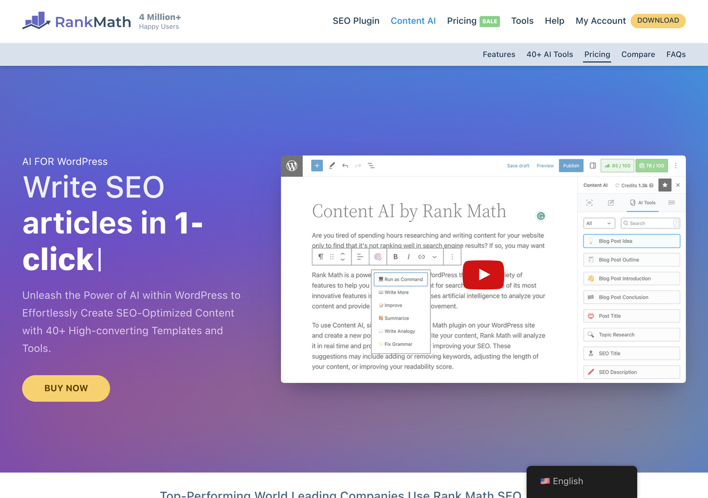
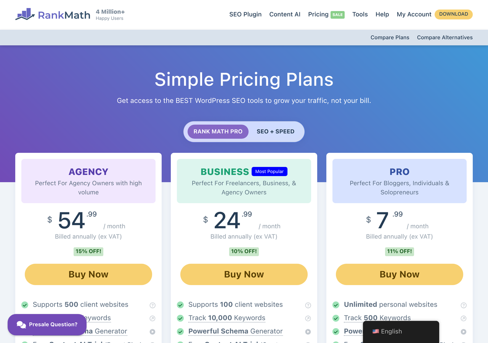

Your JD says "AI isn't just a buzzword at Rank Math, it's core to our product strategy." Your homepage says "SEO for WordPress Made Easy." Both are true. They don't meet on the same page. The audit below is built around closing that gap. Each finding pairs the actual page evidence with what it costs the buyer and how fast it's fixed.
The 2026 Rank Math buyer isn't who the 2020 hero was written for. WordPress site owners still arrive (the install base), but the new growth comes from AI-search-aware founders evaluating the GEO toolkit and SEO agencies pricing the multi-site Pro tier. The hero serves the first. The other two have to dig.



Four interactive demos of the systems an AI-PM would ship in week one. Each one tied to a specific line in your JD. Each one is interactive.